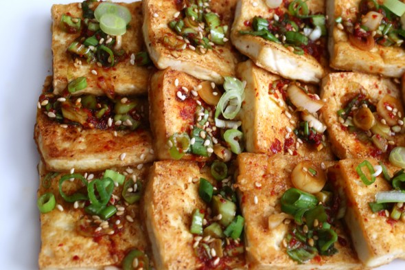

Dububuchim-yangnyeomjang

Description
This is one of my most nostalgic dishes I ate growing up. My grandma made this easy and naturally vegan
dish all the time. This is her recipe, so please take care of it.
Ingredients
- 1 Block Firm Tofu
- 2 TBSP Soy Sauce
- 2 TSP Sesame Oil
- 1 TSP Sugar or Syrup
- 2 TSP Gochugaru
- 2 Chopped Green Onion
- 2 Clove or TBSP of Garlic
Directions
- Heat up oil in a large pan. Start rice if desired.
- Add Tofu and cook until both sides are golden-brown.
- Spoon sauce over tofu and sprinkle sesame seeds.